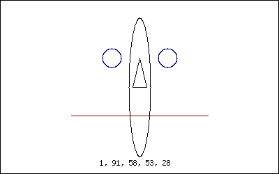
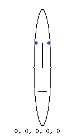
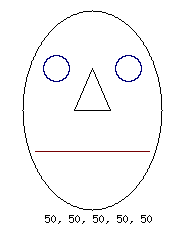
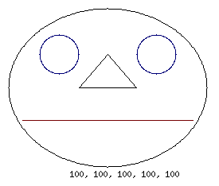

Making Chernoff Faces with Perl
Today being a Saturday, I decided to noodle around with the GD::Simple module and constructed rudimentary Chernoff faces - Cartoon data visualization.

The results are satisfying, but the code needs some work to make it more generic...
The program reads-in a text file of 5-dimensional comma separated values and builds a cartoon face having dimensions for head width, mouth width, eye spacing, eye size (diameter) and nose width, for each data row.
Here is the data file that was used to make the accompanying animated image:
1,91,58,53,28
22,60,33,65,42
46,11,40,23,48
85,26,1,32,59
98,6,34,43,7
69,19,49,49,16
29,55,68,1,25
51,26,72,69,33
45,84,23,95,53
4,43,31,41,48
And here are three reference images showing the data minimum, mid-point and maximum that were used to analyze the above data:
  